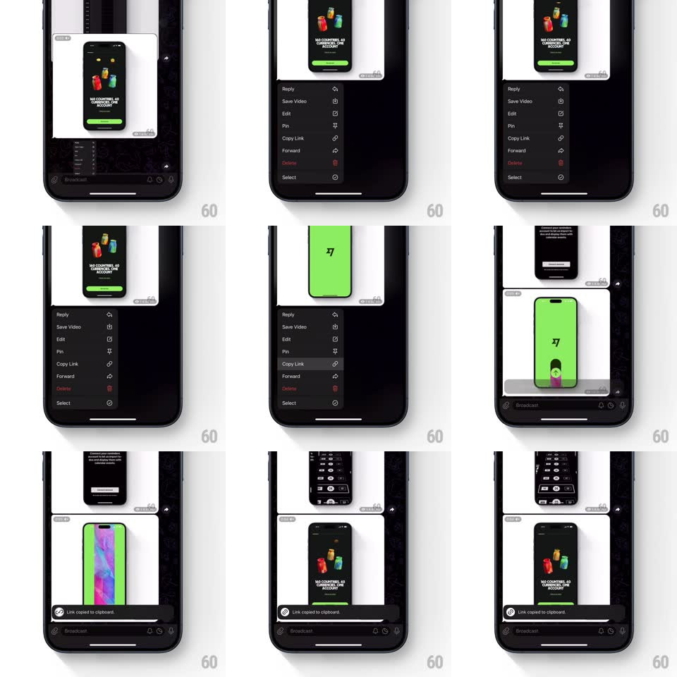

Media
Frame-by-frame

Rebuild this interaction 1:1: Telegram's copy-link toast - long-press a message to raise the dark context menu (Reply, Save Video, Edit, Pin, Copy Link, Forward, Delete, Select), tap Copy Link, and a pill toast "Link copied to clipboard" slides up above the input bar with a check icon.

Rebuild this interaction 1:1: Telegram's copy-link toast - long-press a message to raise the dark context menu (Reply, Save Video, Edit, Pin, Copy Link, Forward, Delete, Select), tap Copy Link, and a pill toast "Link copied to clipboard" slides up above the input bar with a check icon. ## Integration Integration: stack-agnostic spec - springs given as stiffness/damping, timed motions as duration + curve; map every value to your framework and animation library of choice. ## Scene Dark chat, an image message (phone mockups on white). Long-press state: the message floats slightly raised and dimmed backdrop, a rounded dark menu below it with icon rows. Toast: a slim dark pill pinned above the input field, check icon + "Link copied to clipboard". ## Motion spec Pattern: context menu with confirming toast. - Long-press: the message scales 1.02 and lifts (shadow deepens, 200ms) with a haptic thump; the menu springs up from the message's edge (scale 0.7 -> 1 anchored at top, spring ~380/18), rows staggering in (fade + 8px, 25ms apart). - Tap Copy Link: the tapped row flashes (10% white wash, 150ms), the menu collapses back into the message (scale + fade, 200ms), and the message settles (scale 1, spring ~400/22). - The toast rises from above the input bar (translateY 16 -> 0 + fade, spring ~360/20 - one small overshoot), the check drawing itself (200ms). - Holds 2s, then sinks back down and fades (250ms). - The input bar never moves - the toast rides just above it, not pushing it. ## Calibration - The toast confirms the clipboard, not the menu - it appears only after the menu fully dismisses. - One toast at a time: a new copy replaces the current one (crossfade 150ms). ## Reduced motion Menu fades; toast fades in place. ## Don't miss - The menu is anchored to the message - it grows out of the bubble, not the screen edge. - The toast's check draws - a static icon would miss the confirmation beat.